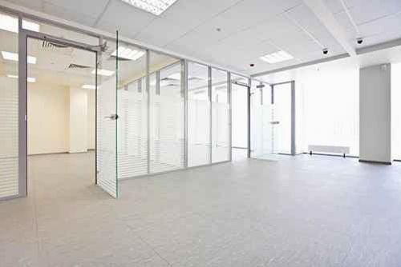

Vidraria em Vila Nova de GaiaO vidro certo
O vidro certo
para o seu espaço.
Uma reparação, uma janela ou uma nova aplicação. Encontre o serviço e fale com a equipa sobre o que pretende fazer.
Explorar soluçõesImagem ilustrativa do website oficialPor onde começarO seu pedido pode
O seu pedido pode
começar aqui.
Escolha a situação mais próxima da sua. Cada percurso reúne os serviços relevantes e os elementos que pode preparar para o primeiro contacto.
Ver possibilidadesAplicações que ajudam
Ver aplicaçõesAplicações que ajudam
a explicar a ideia.
Imagens de referência publicadas no website oficial, usadas para ilustrar aplicações.
Vidro e alumínio para
casa, comércio e indústria.
A Vidraria Cunha apresenta serviços de corte e transformação de vidro, colocação de espelhos, instalação e reparação. O ponto de partida é o espaço e a intervenção que pretende realizar.
Consultar contactos